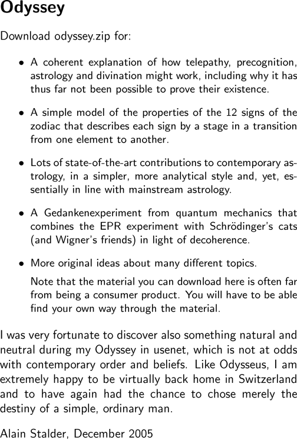

i i i i i i i i i i i i |
  Odyssey Download odyssey.zip for: - A coherent explanation of how telepathy, precognition, astrology and divination might work, including why it has thus far not been possible to prove their existence. - A simple model of the properties of the 12 signs of the zodiac that describes each sign by a stage in a transition from one element to another. - Lots of state-of-the-art contributions to contemporary astrology, in a simpler, more analytical style and, yet, essentially in line with mainstream astrology. - A Gedankenexperiment from quantum mechanics that combines the EPR experiment with Schr\"odinger's cats (and Wigner's friends) in light of decoherence. - More original ideas about many different topics. Note that the material you can download here is often far from being a consumer product. You will have to be able find your own way through the material. I was very fortunate to discover also something natural and neutral during my Odyssey in usenet, which is not at odds with contemporary order and beliefs. Like Odysseus, I am extremely happy to be virtually back home in Switzerland and to have again had the chance to chose merely the destiny of a simple, ordinary man. Alain Stalder, December 2005 |